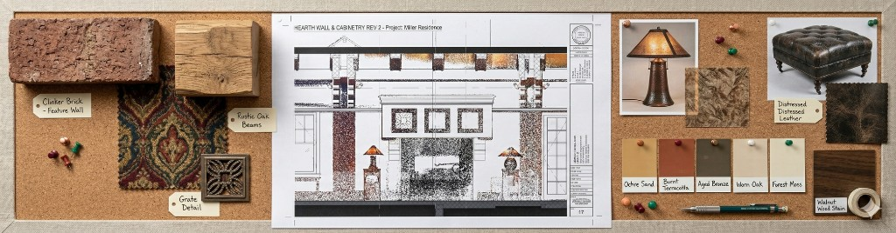

The success of any high-quality interior renovation or redesign begins with an accurate view of the existing conditions. This foundational data is crucial for interior architects, as traditional site measurement methods—relying on outdated plans or tedious hand measurements—introduce substantial risk. These error-prone approaches threaten a firm’s profitability and professional reputation by causing costly design revisions and construction clashes that can severely damage client relationships.
Sophisticated architectural practices recognize that investing early in accurate documentation is a strategic imperative. This data manages client expectations and solidifies project scope by answering fundamental questions like, “What can I do?” and “How much should I budget?”. Modern reality capture, such as Ground Truth 3D’s cutting-edge LiDAR scanning coupled with high-resolution 360° photography, eliminates uncertainty. This verifiable foundation allows interior architects to immediately shift focus to creative problem-solving and design innovation.
Process and Deliverables
Read more
Core Benefits: Accelerated Timelines and Enhanced ROI
Advanced documentation methods offer two profound benefits that impact project delivery: accelerated timelines and a robust return on investment (ROI) through comprehensive risk mitigation.
Accelerated Timelines
LiDAR documentation dramatically accelerates project timelines compared to manual methods. Traditional field work and base plan drafting can take weeks, but documentation services compress this into hours for data collection and a quick turnaround for modeling. This rapid acquisition minimizes disruption, allows the design team to bypass base plan creation, and enables earlier schematic development. This efficiency translates directly into faster project completion and quicker billing cycles.
Cost-Effectiveness and Return on Investment (ROI)
By virtually eliminating dimensional errors in the base data, this approach significantly mitigates the risk of costly delays and change orders during construction. A single dimensional error discovered late can easily outweigh the entire initial documentation cost. The comprehensive 3D nature of the LiDAR scan captures all necessary data, ensuring that if the project scope expands, re-measurement is unnecessary. Utilizing an accurate 3D BIM model from day one streamlines coordination with all engineering disciplines (MEP and Structural), reducing conflicts before they reach the job site.
Documentation Options Tailored for Interior Architecture
Modern solutions provide targeted precision, ranging from efficient 2D layouts to full 3D models.
- Targeted 2D Documentation: This is cost-effective for limited-scope projects like tenant improvements. It uses 3D LiDAR scanning but limits modeling to 2D information, producing precise floor plans, sections, and reflected ceiling plans in industry-standard formats. The 3D data is still captured as a byproduct for future use.
- Detailing for Fabrication Accuracy: Detailed Interior Elevations are essential for custom millwork and complex interior detailing. This service captures precise locations of existing casework and critical service points. The primary benefit is the drastic reduction in fabrication and installation errors, saving significant time and construction costs.
- 3D Modeling and Visualization: For firms using BIM, this service delivers a rich 3D Revit model that accurately captures geometry, ensuring consistency and facilitating clash detection. The 3D data also enables client communication tools like quick Schematic 3D Fly-throughs for early visualization.
Specialized Support for Interior Systems
Meticulous planning is required for accurate systems integration. Electrical and Mechanical Fixture Mapping accurately locates existing service points. This proactively prevents costly clashes between new architectural elements and essential building services. For renovations involving structural changes, Enhanced Structural Detailing provides focused documentation of critical load-bearing elements.
Accurate existing conditions documentation is a strategic imperative for successful, risk-managed design. By leveraging advanced technology like LiDAR scanning and 360° photography, interior architects gain the necessary speed and precision. Starting every project on a foundation of unimpeachable data positions firms to execute designs flawlessly, minimize construction risk, and significantly enhance their reputation through successful, referral-generating projects.
Ready to discuss scope, formats, and deliverables for your next interior project?
Get in TouchProperty types documented
A comprehensive list of types of buildings, sites, and campuses Ground Truth 3D has scanned, with links to content where available.
Discuss deliverables and timeline with our team.
Get in TouchServices
- Commercial Building ECD
- Single Family Residential
- Site Mapping ECD
- Construction Progress Monitoring
- 3D Visualization
- Disaster Planning ECD
- Historic Documentation ECD
- Facade Scanning ECD
- Campus Mapping ECD
- Landscape Mapping ECD
- Project Context ECD
Recent blog content
Start with a conversation about your documentation needs.
Get in Touch